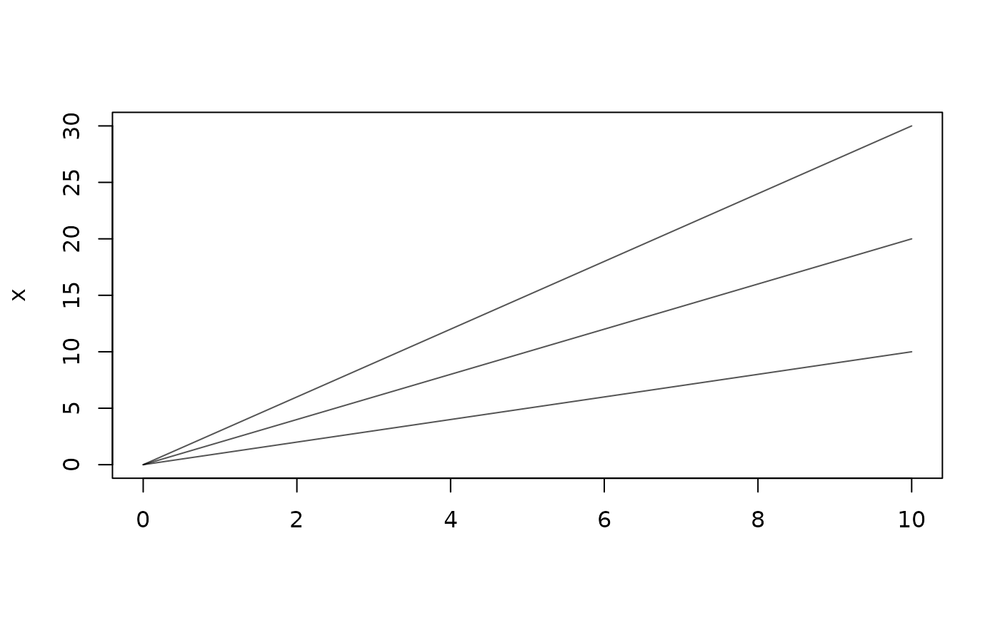

These functions access, subset, replace and evaluate tf objects.
For more information on creating tf objects and converting them to/from
list, data.frame or matrix, see tfd() and tfb(). See details.
Usage
# S3 method for class 'tf'
x[i, j, interpolate = TRUE, matrix = TRUE]
# S3 method for class 'tf'
x[i] <- valueArguments
- x
an
tf.- i
index of the observations (
integerish,characterorlogical, usual R rules apply). Can also be a two-columnmatrixfor extracting specific (function, arg-value) pairs: the first column gives the function indices, the second column gives theargvalues at which to evaluate each function. Returns a numeric vector in that case.jmust not be provided wheniis a matrix.- j
The
argused to evaluate the functions. A (list of)numericvectors. NOT interpreted as a column number but as the argument value of the respective functional datum. Ifjis missing butmatrixis explicitly given,jdefaults to tf_arg(x).- interpolate
should functions be evaluated (i.e., inter-/extrapolated) for values in
argfor which no original data is available? Only relevant for the raw data classtfd, for which it defaults toTRUE. Basis-representedtfbare always "interpolated".- matrix
should the result be returned as a
matrixor as a list ofdata.frames? IfTRUE,jhas to be a (list of a) single vector ofarg. See return value.- value
tfobject for subassignment. This is typed more strictly than concatenation: subassignment only happens if the common type ofvalueandxis the same as the type ofx, so subassignment never changes the type ofxbut may do a potentially lossy cast ofvalueto the type ofx(with a warning).
Value
If i is a two-column matrix, a numeric vector of pointwise
evaluations (one per row of i).
If j is missing (and i is not a matrix), a subset of the functions in
x as given by i.
If j is given and matrix == TRUE, a numeric
matrix of function evaluations in which each row represents one function
and each column represents one argval as given in argument j, with an
attribute arg=j and row- and column-names derived from x[i] and
j.
If j is given and matrix == FALSE, a list of tbl_dfs with
columns arg = j and value = evaluations at j for each observation
in i.
Details
Note that these break certain (terrible) R conventions for vector-like objects:
no argument recycling,
no indexing with
NA,no indexing with names not present in
x,no indexing with integers
> length(x)
All of the above will trigger errors.
Examples
x <- 1:3 * tfd(data = 0:10, arg = 0:10)
plot(x)

# this operator's 2nd argument is quite overloaded -- you can:
# 1. simply extract elements from the vector if no second arg is given:
x[1]
#> tfd[1]: [0,10] -> [0,10] based on 11 evaluations each
#> interpolation by tf_approx_linear
#> [1]: ▁▁▂▃▄▄▅▆▇██
x[c(TRUE, FALSE, FALSE)]
#> tfd[1]: [0,10] -> [0,10] based on 11 evaluations each
#> interpolation by tf_approx_linear
#> [1]: ▁▁▂▃▄▄▅▆▇██
x[-(2:3)]
#> tfd[1]: [0,10] -> [0,10] based on 11 evaluations each
#> interpolation by tf_approx_linear
#> [1]: ▁▁▂▃▄▄▅▆▇██
# 2. use the second argument and optional additional arguments to
# extract specific function evaluations in a number of formats:
x[1:2, c(4.5, 9)] # returns a matrix of function evaluations
#> 4.5 9
#> [1,] 4.5 9
#> [2,] 9.0 18
#> attr(,"arg")
#> [1] 4.5 9.0
x[1:2, c(4.5, 9), interpolate = FALSE] # NA for arg-values not in the original data
#> Warning: ℹ `interpolate = FALSE` and no values present for some `j`
#> ✖ `NA`s created.
#> 4.5 9
#> [1,] NA 9
#> [2,] NA 18
#> attr(,"arg")
#> [1] 4.5 9.0
x[-3, seq(1, 9, by = 2), matrix = FALSE] # list of data.frames for each function
#> [[1]]
#> arg value
#> 1 1 1
#> 2 3 3
#> 3 5 5
#> 4 7 7
#> 5 9 9
#>
#> [[2]]
#> arg value
#> 1 1 2
#> 2 3 6
#> 3 5 10
#> 4 7 14
#> 5 9 18
#>
# 3. use a 2-column matrix to extract specific (function, arg) pairs:
x[cbind(1:3, c(0, 5, 10))] # one value per function
#> [1] 0 10 30
# 4. use matrix= with a missing j to evaluate on the default arg grid:
x[1:2, , matrix = FALSE] # same as x[1:2, tf_arg(x), matrix = FALSE]
#> [[1]]
#> arg value
#> 1 0 0
#> 2 1 1
#> 3 2 2
#> 4 3 3
#> 5 4 4
#> 6 5 5
#> 7 6 6
#> 8 7 7
#> 9 8 8
#> 10 9 9
#> 11 10 10
#>
#> [[2]]
#> arg value
#> 1 0 0
#> 2 1 2
#> 3 2 4
#> 4 3 6
#> 5 4 8
#> 6 5 10
#> 7 6 12
#> 8 7 14
#> 9 8 16
#> 10 9 18
#> 11 10 20
#>
# in order to evaluate a set of observed functions on a new grid and
# save them as a functional data vector again, use `tfd` or `tfb` instead:
tfd(x, arg = seq(0, 10, by = 0.01))
#> tfd[3]: [0,10] -> [0,30] based on 1001 evaluations each
#> interpolation by tf_approx_linear
#> [1]: ▁▁▁▁▁▁▁▁▁▁▂▂▂▂▂▂▂▂▂▂▃▃▃▃▃▃
#> [2]: ▁▁▁▁▁▂▂▂▂▂▃▃▃▃▃▄▄▄▄▄▅▅▅▅▆▆
#> [3]: ▁▁▁▂▂▂▂▃▃▃▄▄▄▅▅▅▆▆▆▆▇▇▇███